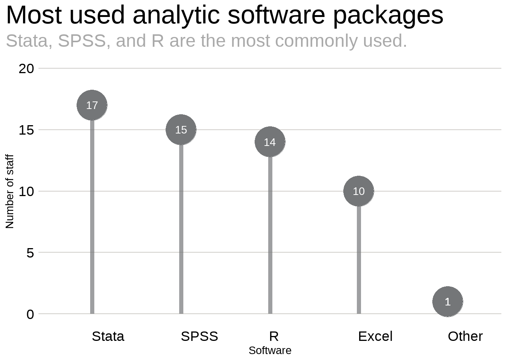

Internal Mentoring and Tech Advice Networks
Introduction
At the January 9, 2023 all company Monday meeting, Melanie Murphy presented on the Advanced Analytics and Data Science team. At the end of her presentation, we requested those interested in engaging with this team to fill out a small survey about their analytics background and where they work within the company. The final two questions, however, asked about respondents’ engagement with colleagues. They were:
- Who within MSI are you able to turn to for mentorship/career guidance?
- Who within MSI do you turn to most often to discuss or get help on technical questions?
The responses to these questions are the topic at hand in this post. First, we will look at the different statistical and software skills, and then we will analyze the informal networks that have developed within MSI, one for mentoring and the other for specific technical questions. To help us make sense of the network statistics, we will simulate similar networks to help us understand the statistics in context. We will then compare these with the official organizational structure.
Our methology and data
The data come from a voluntary, virtual survey that was distributed during a company meeting. The response rate was low so the Advanced Analytics team identified additional staff at the home office and on field teams to take the survey to give us a better picture of analytics at MSI. All names were anonymized.
Let’s start by looking at which analytical softwares are used most frequently by MSI staff.
Summary Statistics
We received 47 responses to the survey with 23 responses from home office staff and 24 responses from field office staff representing projects in Iraq, Nigeria, Jordan, and Zambia.
Adding missing grouping variables: `new`
This includes all responses. Within this, the home office accounts for 8 Stata users, 4 SPSS users, and 9 R users.
Networks
Next, let’s look at the networks. We collected data for two networks – one related to mentoring and another related to technical guidance, and then we decided to filter the data so that we only included survey SEA staff To understand the networks we have to identify the people and their connections. In network analysis these are called, nodes and edges, respectively. To better understand how this works let’s look at an example of a dataframe that shows the ties and one that shows the nodes.
Within the SEA practice area we have 18 nodes in our mentorship network consisting of 23 edges. In the technical guidance network we have 19 nodes and 32 edges.


Network statistics
How do these statistics compare with what we would expect from similar networks? We can run some simulations to find out.
Network | Avg. Density | Avg. Distance | Avg. Transitivity | Avg. Betweenness | Avg. Eigenvector |
|---|---|---|---|---|---|
Mentorship | 0.15 | 2.69 | 0.15 | 14.39 | 0.33 |
Simulated Mentorship | 0.15 | 2.67 | 0.14 | 11.97 | 0.44 |
Tech Guidance | 0.19 | 2.65 | 0.35 | 14.84 | 0.34 |
Simulated Tech Guidance | 0.19 | 2.36 | 0.17 | 11.58 | 0.50 |